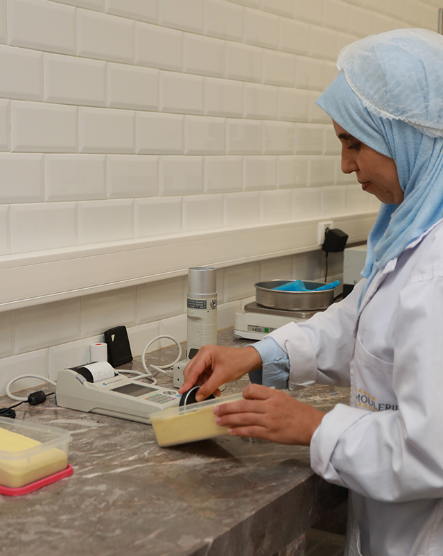

Approvisionnement et stockage
Notre équipe s’engage avec passion pour vous fournir des farines et semoules d’une qualité irréprochable.
Cela commence par le choix de nos matières premières. Blé tendre ou blé dur, nous sélectionnons pour vous les meilleurs blés à travers le monde. Pour les semoules, nous utilisons quasi exclusivement le blé dur canadien grade n°1, Rolls Royce du blé dur.
Cela commence par le choix de nos matières premières. Blé tendre ou blé dur, nous sélectionnons pour vous les meilleurs blés à travers le monde. Pour les semoules, nous utilisons quasi exclusivement le blé dur canadien grade n°1, Rolls Royce du blé dur.
Notre laboratoire et fournil d’essai
Notre laboratoire veille au grain !
Nos blés et farines subissent tous des tests physico-chimiques à toutes les étapes clés de production. Notre objectif ? Fournir à nos clients des produits d’une qualité régulière et conforme aux exigences de leur cahier des charges. Nos farines et semoules sont ensuite testées en conditions réelles dans notre fournil d’essai.
